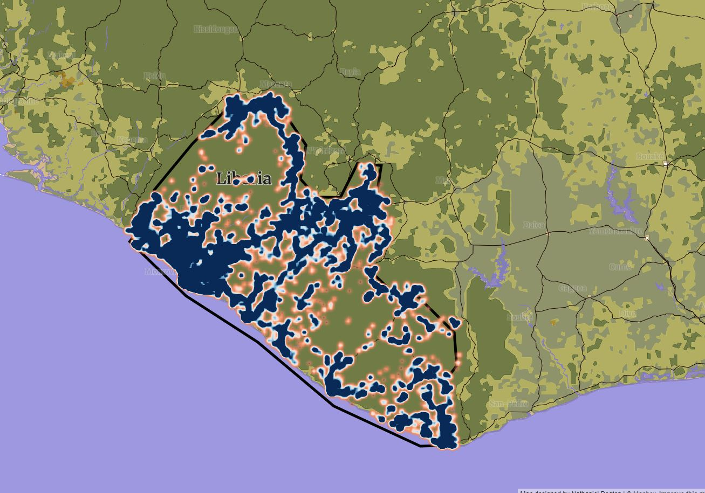

Nathaniel Deaton
Data visuals, GIScience, happy little point clouds
About
Blog
Photography
Portfolio
Static Maps
A Bathymetric Map of Molok'ai
A Geographic History of Cats
Mapping Primary Education in Kenya
Afghanistan Confrontations Map
An Historic, Geological Map of Iceland
Patterns of Movement: Mapping the US Energy Output
Europe Confrontations Map
Little Venerations: A Map of Mandirs in Varanasi, India

A Heatmap of Water Pump Access in Liberia